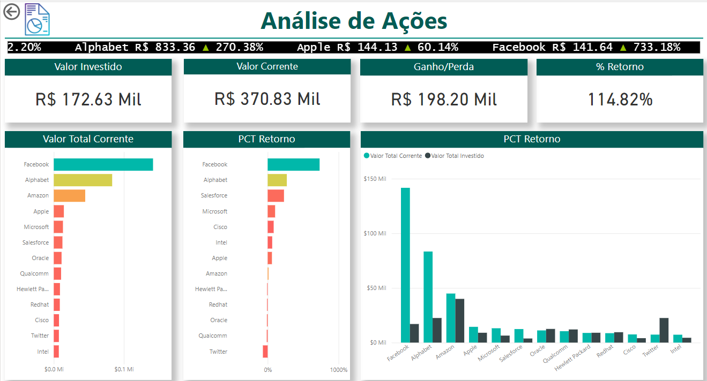
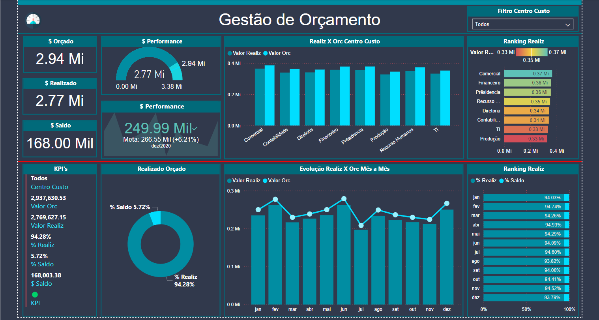

Gabriel Soares
Analista de Dados.
Sou um analista de dados, especializado em trabalhar com Python, Power BI, SQL, Excel, Git e GitHub. Gosto de participar de projetos desde a definição de métricas e requisitos de análise até a entrega de insights que agregam valor ao negócio.
Tenho experiência em manipulação de dados, visualização de informações e automação de processos, sempre buscando aprimorar minhas habilidades e entregar análises de alta qualidade.
Minhas Skills
Conheça as tecnologias que domino:
Data Analysis Tools
Databases
Version Control & Collaboration
Projetos
Dashboads no PowerBI
Projeto 1: Análise de Vendas
Este dashboard foi desenvolvido para analisar as vendas de uma empresa e monitorar o desempenho em várias dimensões de negócios. Ele inclui:
- Vendas e Meta: Exibe o total de vendas realizadas e a meta estabelecida, destacando o desempenho geral.
- Performance de Vendas: Um gráfico de progresso que compara as vendas com a meta, fornecendo uma visão rápida do desempenho.
- KPI: Mostra o lucro ou prejuízo em relação à meta, com destaque visual para desvios.
- Semáforo de Metas: Tabela que detalha o desempenho por vendedor, utilizando indicadores visuais para representar o cumprimento das metas.
- Share de Canal: Gráfico de pizza que analisa a distribuição das vendas entre canais (Distribuidor e Direta).
- Top 5 Clientes: Lista os cinco maiores clientes com base no volume de vendas.
- Top 5 Produtos: Mostra os produtos mais vendidos, com destaque para os líderes em faturamento.
- Top 5 Vendedores: Identifica os vendedores com maior volume de vendas, destacando os mais eficientes.
- Lucro por Categoria: Apresenta uma visão detalhada do lucro por categoria de produtos.
- Evolução de Vendas por Categoria: Gráfico de área que analisa o desempenho das vendas ao longo do tempo, categorizado por tipo de produto.
Este dashboard é uma ferramenta completa para gestores acompanharem as vendas e tomarem decisões informadas.

Projeto 2: Análise de Ações
Este dashboard apresenta uma visão detalhada do desempenho financeiro de um portfólio de investimentos:
- Valor Investido: Mostra o total investido em ações do portfólio.
- Valor Corrente: Apresenta o valor atual das ações, destacando a valorização ou desvalorização.
- Ganho/Perda: Exibe o lucro ou prejuízo em valores absolutos, permitindo avaliar o retorno financeiro.
- % Retorno: Indica o percentual de retorno sobre o investimento inicial.
- Gráfico de Barras - Valor Total Corrente: Compara o valor atual das ações de diferentes empresas, ajudando a identificar as mais valiosas no portfólio.
- Gráfico de Barras - PCT Retorno: Mostra o percentual de retorno por ação, facilitando a identificação das ações mais rentáveis.
- Comparativo de Valor Corrente e Investido: Visualiza a diferença entre o valor investido e o valor atual, empresa por empresa.
Esse dashboard é ideal para investidores que desejam acompanhar o desempenho do portfólio de maneira clara e tomar decisões estratégicas baseadas em dados.
Projeto 3: Gestão de Orçamento
Este dashboard foi criado para auxiliar na gestão de orçamento, fornecendo uma análise detalhada dos valores orçados, realizados e saldos disponíveis. Ele inclui:
- $ Orçado, $ Realizado e $ Saldo: Exibe os valores totais orçados, realizados e o saldo remanescente.
- Performance de Orçamento: Representado por gráficos e KPI, compara os valores realizados com os valores orçados.
- Realiz X Orçado por Centro de Custo: Gráfico de barras que detalha a performance orçamentária por centro de custo.
- Ranking Realiz: Classificação dos centros de custo pelo valor realizado, com uso de cores para destacar performances.
- KPI's Detalhados: Mostra métricas como porcentagem realizada, saldo percentual e outros indicadores importantes.
- Realizado x Orçado (% de Saldo): Um gráfico de pizza que destaca a proporção entre o valor realizado e o saldo.
- Evolução Realiz X Orçado (Mês a Mês): Um gráfico de linhas que mostra o desempenho orçamentário ao longo do tempo.
- Ranking Realiz (% Realiz e % Saldo): Exibe a porcentagem realizada e o saldo em um ranking mensal.
Este dashboard é uma poderosa ferramenta de controle financeiro, permitindo que gestores monitorem e ajustem seus orçamentos para atingir metas de maneira eficiente.
